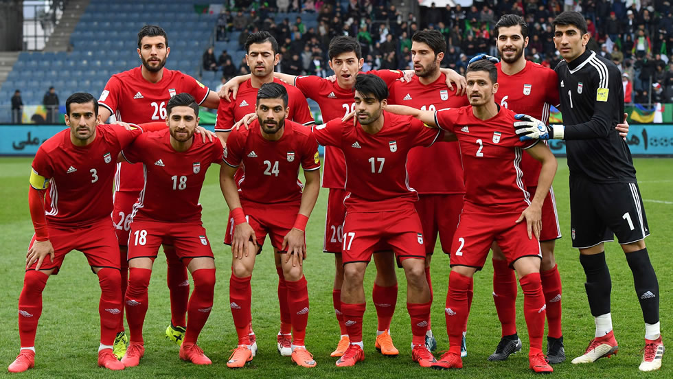

Ranking FIFA: 20° (octubre 2022)
¿Cómo se clasificó al Mundial? Terminó entre los dos primeros del Grupo A de las Eliminatorias Asiáticas.
Rendimiento en 2021 (G-E-P): 10-1-0 (31 GF, 3 GC, +28)
Rendimiento en 2022: 4-1-2 (7 GF, 5 GC, +2)
Amir Abedzadeh
Sadegh Moharrami
Hossein Kanaanizadegan
Shoja Khalizadeh
Milad Mohammadi
Ali Gholizadeh
Ahmad Nourollahi
Saeid Ezatolahi
Alireza Jahanbaksh
Sardar Azmoun
Mehdi Taremi.
Nacionalidad: portugués.
Edad: 69 años.
Contratado: 7 de septiembre de 2022.
Récord en el cargo (G-E-P): 61-28-13
Títulos en el cargo: Ninguno.
Victoria más notable: 1-0 sobre Marruecos, Mundial 2018.
1930 Uruguay *
1934 Italia *
1938 Francia *
1950 Brasil -
1954 Suiza -
1958 Suecia -
1962 Chile -
1966 Inglaterra -
1970 México -
1974 Alemania -
1978 Argentina 14°
1982 España -
1986 México -
1990 Italia -
1994 Estados Unidos -
1998 Francia 20°
2002 Corea y Japón -
2006 Alemania 25°
2010 Sudáfrica -
2014 Brasil 28°
2018 Rusia 18°
